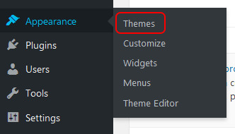
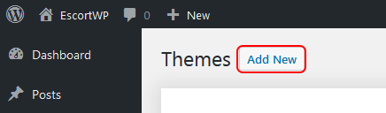
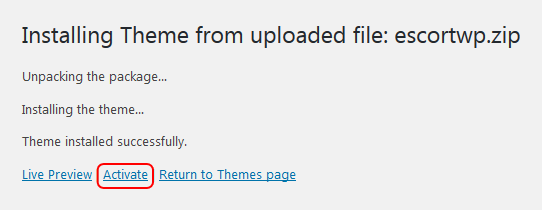

Escort Directory WordPress Theme
1. Description of the theme
This theme will help you build your own escort directory in minutes.
Once you install it it's ready to go.
No need for configurations, no need for 10 extra plugins, just the theme.
We built this theme based on client feedback and we'll continue to update the theme and make it even better.
2. Installation
2.1 Method 1: install the theme from your WordPress Administration Panel
-
Go to your WordPress Administration Panel (
http://DOMAIN.COM/wp-admin/), login if necessary, and navigate to the Appearance->Themes admin menu.  -
Click the
Add newbutton and then theUpload Themebutton from the next page.
 - After you do this a
Browsebutton will appear. Click it and select theescortwp.zipfile from your computer, then click theInstall Nowbutton. -
After you upload the theme you should see a screen like in the image bellow. After it's finished unzipping click the
Activatelink.

2.2 Method 2: install the theme by FTP
- On your computer navigate to the folder containing the theme and unzip the archive
escortwp.zip. This should create a new folder named "escortwp" with all the files in it. - Open your favorite FTP client(we recommend FileZilla for a free alternative or FlashFXP for a paid alternative)
- Log in to your web server and navigate to the directory where WordPress has been installed, then go the themes subdirectory. Normally the themes directory is in
/wp-content/themes/. - Using your FTP client copy the entire "escortwp" folder (including the folder itself) from your computer to the
/wp-content/themes/directory on the web server. - After you have copied the theme go to your WordPress Administration Panel (
http://DOMAIN.COM/wp-admin/), login if necessary, and navigate toAppearance->Themes.
You should seeEscortWPon the list of available themes. Simply clickActivateunder the theme's thumbnail and the theme will take it from there.
3. Getting started and what you should know about your theme
After you have activated your theme you will see an installation screen for the theme.
The theme comes with a predefined list of all the countries in the world. You can choose to add the whole list to your website so that escorts from all over the world can add their profiles.
If you prefer to manage a site with escorts only from a certain region or from a single country then install the theme without any countries and then add only the countries you need.
Adding countries is done from the WordPress Admin Panel by clicking "Escorts"->"Countries"
After you have installed the theme the first things you should do is change your permalink structure so your website can use more search engine friendly urls.
To do this you will have to go to your WordPress Admin Panel and click Settings->Permalinks
From the "Common Settings" choose "Post name" from the list and then click "Save changes".
When you first install your blog, WordPress will automatically add a set of demo widgets to your sidebars. You don't need them so you should remove them from the sidebar of the theme.
To do this you will have to go to the page located at Appearance->Widgets.
In this page you will see a list of widgets in the right side of the page. Click on the widget name(your cursor pointer will change) and drag it to the left side of the page under "Available Widgets" section.
If you do want to leave some of the widgets in the sidebar that is not a problem but we think you won't need most of the widgets from that predefined list.
After this we recommended you go to the front page of the site and check your admin pages and set your site settings.
All your admin pages can be found on the front page of your website. You will find all your admin page links hidden under a blue dropdown menu positioned in the the top right sidebar labeled Admin links. You will not find any admin pages in your WordPress Admin Panel.
Everything is done from the front side of your site and you will manage all the escorts from the front side also.
All other user types from your website will also have this dropdown menu but it will only contain links needed to manage their specific account type.
All escorts should be added from the frontpage of the site. Never add escorts or agencies from the WordPress Admin Panel like you would add a normal blog post.
On your website there are two types of escorts: independent escorts and escorts added by agencies.
Independent escorts can edit their own account and can only add a single escort account for themselves.
Agencies can add multiple escorts account under a single master agency account. These escorts have no way of editing the accounts by themselves.
If you have lots of escorts to add then we recommended that you add an agency first(you have a link in your admin dropdown) and then add all the escorts under that account.
As an admin you can't add escorts under your account. The admin account is only used for managing the site.
4. Theme admin pages
4.1 Classified Ads
Admins and agencies can post classified ads offers
If anyone is interested in a job posted by an agency then they can visit the classifieds ads section from the website
4.2 Blacklisted Clients
This is the page where you can add clients to the blacklist or search for clients who have been already added by you or by agencies.
The blacklisted clients section serves to have a list of clients who created problems for the escorts that is viewable by all agencies on the website
When adding a client to the blacklist you will need to fill in all 3 fields.
When searching for a client in the blacklist you can search only be email or only by phone.
4.3 Blacklisted Escorts
The escorts blacklist is visible to normal and VIP members and is used to have a list of escorts who have created problems for the agencies or the clients.
On this page you can add an escort or search for escorts that are already in on the blacklist.
4.4 Add agency
If you need to add lots of escorts to the website you will need to first create an agency and then add the escorts under that agency.
In the process of creating a new agency the theme will also create a separate username for that agency. On this page you can create accounts on behalf of other agencies or you can create accounts to use for yourself.
If the account is for yourself you don't necessarily need to remember the username and password since admins have access to the agency's escorts. Just enter a valid email address in the process of adding the agency.
4.5 Add independent escort
When adding an independent escort the theme will create a separate username for that escort. You can then pass the username login information to the escort or manage the escort yourself.
When adding an escort as an admin, the email address does not need to be validated anymore and if you set a price for escort registration the account will get published on the site without the need for payment
4.6 Activate tour
If you have chosen a manual payment option in your Payment settings page and you also chose a price for tour adding to your website then you will have to manually activate the tours added by escorts or by agencies.
Escorts or agencies will contact you once they have made the payment for a tour and they will communicate the tour ID to you. After you confirmed the payment has been made you will have to click the link and a new panel will appear above your right sidebar.
Enter the tour ID there and simply click the "Activate tour" button.
4.7 Activate VIP user
Enter the user ID in the text field and then choose the period you want your user to have VIP status, and simply click the "Activate VIP user" button.
If an user already has VIP status and you want to extend his status then the process is the same. The period of time you choose will be added to time the user still has left from his VIP status
From this section you can also remove the VIP status of members. The theme automatically removes the VIP status when the time expires but if you want to remove the status for a user manually then you can do that too. You don't need to select any period for this step. Just enter the user ID and click Remove VIP.
4.8 Site Settings
- Site name & Site description
The "Site name" field will be used as the your website's overall name. The name you enter will also be used in the top left part of the header. If you uploaded a logo then the logo will be displayed instead of the name, in the header.
The "Site description" will be displayed under the site's name in the header. IF you have uploaded a logo for your website then the description will be displayed under the logo
- Site logo
You can upload a logo for your website that will be displayed in the top left part of the header and also on the login page.
The logo will be displayed in its original size so make sure you resize your logo to look good in the header, before you upload it.
If a logo is already uploaded and you upload a new one then the old logo image is automatically deleted.
- Manually activate...
Here you have the option to choose what you want to manually activate yourself or what you want to be activate automatically. The option names are pretty self-explanatory
If you choose to activate the agencies or escorts profiles manually then the profiles will not become activate until you do so even if the users pays for their account
All user accounts need to pass the email validation check first.
- New escort label period
New escort profiles will have the
NEWlabel if they have registered less then X days ago. You can select your own period here. - Image settings
From here you can limit the number of images that can be uploaded in an escort profile. You can also limit the size of each image.
- Video settings
Here you can enable video upload for your escort profiles.
You can also limit the number of videos and the size of the uploaded videos. Just like in the Image settings section.
Before activating this feature you must make sure you have
ffmpeg(https://ffmpeg.org/) installed on your server. Most web hosting providers do not offer ffmpeg in their shared web hosting plans. You will need to have a VPS or dedicated server and install ffmpeg yourself. This can't be done from the theme.ffmpeg is needed for video upload because the uploaded videos need to be resized and then converted to a web format so that they can be viewed in a web page.
- Height & weight scales
Depending on the region of your clients you can choose to use the metric system or the imperial system for the height and weight fields.
4.9 Content Settings
Here you will be able to edit what parts of the site to hide or change settings for some parts of the website.
Some options are self-explanatory so we'll only explain some of the options.
- Show header slider?
The header slider is a carousel type slider that displays escort profile. The slider is displayed in the top section of the website, immediately after the header.
For an escort to appear in the slider they first need to buy a "featured" status.
The slider shows only 5 escorts at a time in random order(each refresh of the website changes profiles being displayed) and the rest of the escorts can be viewed by clicking on some arrows
If you have disabled the display of the header slider and have set a price for the featured status then the payment button for the featured status will not be shown until you activate the slider.
- Scroll the header slider automatically?
If you want the header slider to move automatically then activate this option.
- Where to show the slider?
Here you can choose on what sections of your website you want to show the header slider.
- What content to show on the front page?
The front page of your website has three sections in the center of the page: premium profiles, new profiles and reviews.
You can choose what sections get shown on the frontpage and also how many profiles or reviews to be shown in those sections.
- Show agreement/disclaimer
If you activate this option then users who visit your website will first need to confirm they are 18(or of legal age in their country) and also agree with your terms of service before viewing the site.
If you want to change the text from the disclaimer then edit the file "
footer-tos-18years-agreement-overlay.php" from your theme directory. - Show "Quick Escort Search" widget in right sidebar?
Show a small search box in the right sidebar of the website.
- Show unchecked services on escort profile page?
When an escort registers on your website they can choose what services they can provide for their clients.
By default, the unchecked services are still displayed on the escort's profile but with a red X icon next to the service to indicate the service is not available. The available services will have a green checked icon to indicate that service is available.
If you choose "No" then the unchecked services will not be listed on the escort's profile anymore. Only the available services will be shown.
- What sections do you want to hide from the site?
Hide sections of the website from your users.
You can also remove the registration pages for some users types if you prefer to not have them all.
- Allow unregistered visitors to send messages to escorts and agencies?
By default, anyone who wants to send a message to an escort or agency profile, needs to be a registered users. If you would like to allow unregistered users to send messages then select yes.
It is also recommended to place a reCAPTCHA in the "Escort and agency contact form" section.
- Add a reCAPTCHA to these forms to prevent spam
If you have spam issues on your website then you can activate a captcha in the contact and registration forms.
- Show registration city/state as a dropdown list?
By default, the country name list in your website is limited to the list of countries that you submitted. You don't need to also write all the cities from those countries. Your users will write their own city name and the theme will create the city page automatically. If you would like to limit the cities where your users can register from then you can activate this option and add your own city names manually. Only those cities will be shown in the registration page.
- Show visitor counter in the following pages
This option will enable you to place a visitor counter in the profile pages of escorts and agencies, and also in the classified ads page.
This does not save the IP information for the visitor. This means the visitor counter is increased at each page load regardless if the visitor already visited the page.
The hit counter will not count admin visits or visits from the author of a profile or classified ad.
4.10 Registration Form
From this page you can control what fields an escort needs to fill in in order to register on your website, what fields are mandatory in the registration process and also the fields you wish to have available on the advanced search page
Some of the fields can't be changed because the theme needs those fields in order to correctly display the escort on your website
When you choose to hide a fields from the registration field, the "mandatory" and the "use in search page" fields will also be set to "no" after you save the page
If you hide a field from the registration form then there is no need to have the field mandatory anymore and there is no point to have it as a filter in the search page either
4.11 Payment Settings
The payments section is handled by WooCommerce. Before you can choose any payment option you will need to activate the plugin WooCommerce
You don't need to create a shop in order to use WooCommerce. All you have to do is activate the plugin and then configure the payments section of the plugin.
If you activate a payment option then the confirmation of payment, payment emails, account activation, checking expired accounts, sending reminders before an account expires, all of this will be handled by the theme.
- Independent Escort Registration
Charge a fee when a user registers on your website for an independent escort account.This user can only add and manage a single escort profile.
Setting a price for this option means that any user who registers on your website as an independent escort will have to pay a price in order to have their account published on your site. The account will be kept as private until the payment is cleared.
The payment a user makes can be configured in several ways
If you want your user to buy a lifetime account then select "Forever" as the period.
If you choose a time frame from the
The price is for a period ofoption then the account will only be active for that period.If you would like to use recurring payments then you will need to install the WooCommerce Subscriptions plugin.
After you install the plugin click the
Edit payment in WordPresslink to go to the WordPress section and setup the payment as recurring. Read the plugin help files to know more.Once the account expires the next step is defined in the "What happens on profile expiration?" option.
The user will be notified by email 2 days before this happens to give the user time to pay again.
Users with a subscription payment will not get those emails since their account will auto renew automatically
- Agency registration
Charge a fee when a user registers on your website for an agency accountIf the recurring payment is not activated and an agency does not continue the subscription payment then the agency account with all the escorts added by that agency will be set to private and will not be shown in your directory anymore
- Agency adding escort
Charge a fee each time an agency wants to add a new escort to their agency profile - Premium options
Charge a fee when an escort wants to have a "Premium" labelCheck the escort labels section for more details about what it means to be a premium escort.
- Featured options
Charge a fee when an escort whant's to become a featured escortCheck the escort labels section for more details about what it means to be a premium escort.
- Tour options
Charge a one time fee when an escort adds a tour to their profile - VIP options
Charge a fee when a member wants to become a VIP member and have extra access to the siteIf you set a price for the VIP section then you also need to choose what the VIP member receives for their payment.
Checking an options from the
Keep the following profile sections locked until payment is madelist will restrict access to normal members to those sections until they pay a fee.
Leaving sections unchecked means that those sections will be visible to all user types.True VIP members are only the ones who pay a membership for your website and they will have access to all escorts.
If a user fails to renew their subscription then their VIP status will be removed. The user will not be deleted from the website.
4.12 Email Settings
In this page you can choose what notifications you want to receive from your website.
From the first section of the page you can choose the identity you want to have when users receive an email from your website. The emails can be for account registration, account activation, reminders to extend their subscription etc
The email signature will be at the end of all emails sent from your website, even in the emails sent by a user to an escort with the help of the contact form.
The second section of the page lets you choose when to be notified of user actions on your website.
The email you write here will only be used to send notifications to that email. It will not be used for anything else.
4.13 WordPress Admin
Sometimes you might need to go to your WordPress Admin Panel to install plugins or manage other aspects not covered by the theme. This is a quick shortcut to help you get there faster.
5. Website sections
5.1. Frontpage
The frontpage is structured in the following manner:
- a header (shown on all pages of the website)
- a left sidebar with a country list (shown on all pages of the website)
- a right sidebar with a "Quick search" section and if the user is logged in then the sidebar will also display account option links (shown on all pages of the website)
- the middle section will display a list of premium escorts first, followed by a list of normal escorts with the newest registered escorts shown and under that a list of the newest escort reviews
- under all of this there will be the widgetized footer area (shown on all pages of the website)
5.2. Our Escorts (Female/Male/Gay/Trans/Independent)
The "Our escorts" page will display all the escorts from your website, of all genders and independent or agency escorts all in a single list.
Premium escorts, as usual, will be shown first.
From that page, or from the header dropdown, a visitor can choose to go to a certain gender page or to only see independent escorts.
Gender specific pages contain independent escorts and agency escorts in a single list while the independent escorts page will have all the genders in a single list.
5.3. Escorts on Tour
The escorts on your website can add tours to their profiles. This shows visitors that certain escorts will be traveling to another city or country, other than the usual city she signed up as being part of.
All escort tours can be seen on this page.
5.4. Agencies
This page holds a list of all the agencies from your website.
5.5. Escort Reviews
Escort reviews will be shown on the individual escort profile pages but they can also be viewed in this page as a full review list.
5.6. Job Adverts
Admins and agencies have the option in their account to add job offers on your website. This page shows all jobs posted and they can also be filtered by "offering" and "looking"
5.7. Blacklisted Escorts
The blacklist escorts page is visible to normal and VIP members and is used to have a list of escorts who have created problems for the agencies or the clients.
5.8. Search
This is the page where your visitors can search for a specific kind of escorts.
5.9. Contact Us
This page is used to send you messages. You don't need to install any kind of contact form plugin for the form to work.
6. User types
6.1 Independent escorts
Users who register on your website as an independent escort can add and manage a single escort profile(theirs).
6.2 Agencies
Agencies can add and manage an unlimited number of escort profiles. Besides the escort profiles they can also manage their own agency profile page. They can not add multiple agency profile. Just a single one.
6.3 Normal members
Normal members do not have many options on the website but a simple visitor will not be able to add reviews to an escort for example so in order to add a review a visitor will need to register on the website.
Registered users can also contact escorts(unless you chose to reserve this only for VIP) and add escorts to a favorites list.
6.4 VIP members
If you chose to activate VIP membership on your website then this type of member will be able to do whatever the normal member account can't
7. Escort labels
7.1. Premium
A premium escort will always be shown first in all the escort listings from your website above the normal escorts. Premium escorts will also have a gold colored "Premium" label next to their picture.
7.2. Verified
All escorts have a section in their account named "100% verify".
On that page escorts can upload an image with themselves holding a piece of paper with your website's name.
This ensured that the account has been added by the escort and not by someone else.
When an escort ads an image to the "100% verify" page you will be notified by email and you will receive the url of the escort. After you confirm that the escort is a real person then you can grant "Verified" status to the escort.
7.3. New
All escorts that have registered on your website in less then 2 weeks ago will have a pink "New" label on their thumbnail image.
7.4. Featured
The featured status is not a label since it will not be shown on their profile thumbnail in the listings. An escort can buy a "Featured" status if you chose a price for the status.
After an escort has purchased a featured status they will be placed in the header slider for more visibility.
8. Known theme incompatibilities with other plugins:
- wp super cache(or any other caching plugin)
The pages will not reflect some changes made by the profile user. For example newly uploaded images. - maintenance mode
In maintenance mode the AJAX requests from the theme will not work. Ajax is used for image uploading and other features.